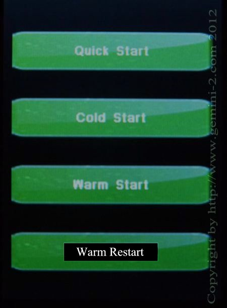

| Interactive Hand-Controller Menus - click on green buttons to Navigate |
|  |
You have 4 choices for startup.
Quick Start - This selection will take you to menus to select your "Mount Type", Enter your "Location", then "Time, Time Zone and Date" Then you will go to the "Main Screen" This also does a "Cold Start". Cold Start - A cold start wipes out all stored modeling. You need to have your mount positioned at want is called CWD. This is with the counter weights down, and the Declination pointed towards Polaris in the Northern Hemisphere, and the South Celestial Pole in the Southern Hemisphere. Warm Start - This is basically the same as a cold start, but does not wipe out any models build. It also remembers all your setting. You still must start with the mount pointed to CWD position as in a cold start. If you have models build, but have moved your Right Ascension axis or Declination axis, but not the location of the mount itself, then you can use this startup mode. Warm Restart - This mode also remembers your modeling and all setting. You can only use this mode if, and only if you have not moved both the Right Ascension axis or Declination axis and also have not moved the mount in position. |
|
If this is your first time operating the mount select the Quick Start
option. All buttons do take you to the appropriate menu. There is
also a menu that can select which default mode the Gemini-2 starts up
in. You will see this menu if you have "Ask if possible" selected as the default start up mode. That menu is under "Mount" then "Startup" in a later menu. |